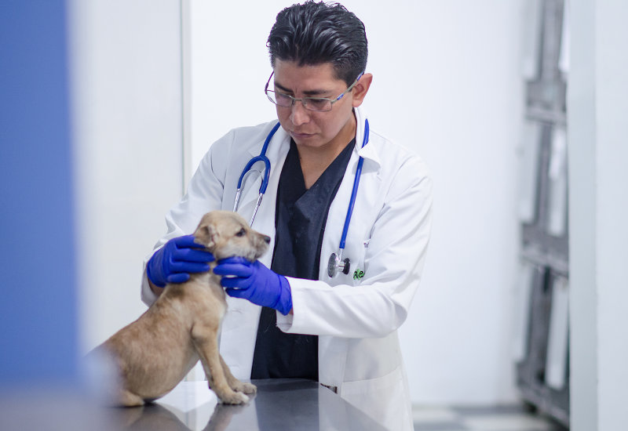

Dra. Ana García
Especializada en oncología y dermatología, la Dra. García es una veterinaria altamente capacitada en el diagnóstico y tratamiento del cáncer y las enfermedades de la piel en animales. Con habilidades en la cirugía oncológica y la dermatología clínica, la Dra. García trabaja incansablemente para mejorar la salud de sus pacientes.

Dr. Jorge Pérez
Como odontólogo veterinario y traumatología, el Dr. Pérez tiene habilidades en el cuidado dental de animales de compañía y el tratamiento de lesiones musculoesqueléticas. Con años de experiencia en la limpieza dental, extracciones y otras intervenciones dentales, el Dr. Pérez trabaja para prevenir y tratar enfermedades dentales, además de tratar lesiones traumatológicas en los animales.

Dra. Karen Martínez
Especializada en oftalmología y neurología, la Dra. Martínez es una veterinaria altamente capacitada en el diagnóstico y tratamiento de enfermedades oculares y neurológicas en animales. Con habilidades en la cirugía ocular y el manejo de afecciones neurológicas, la Dra. Martínez trabaja para mejorar la salud y calidad de vida de los animales.
Dr. Rodríguez
Con especialización en fisioterapia, cardiología, endocrinología y anestesiología, el Dr. Rodríguez tiene habilidades en la rehabilitación física, tratamiento de enfermedades cardíacas, trastornos endocrinos y el manejo del dolor en animales. Con su amplio conocimiento en estas áreas, el Dr. Rodríguez trabaja para mejorar la salud y bienestar de sus pacientes.